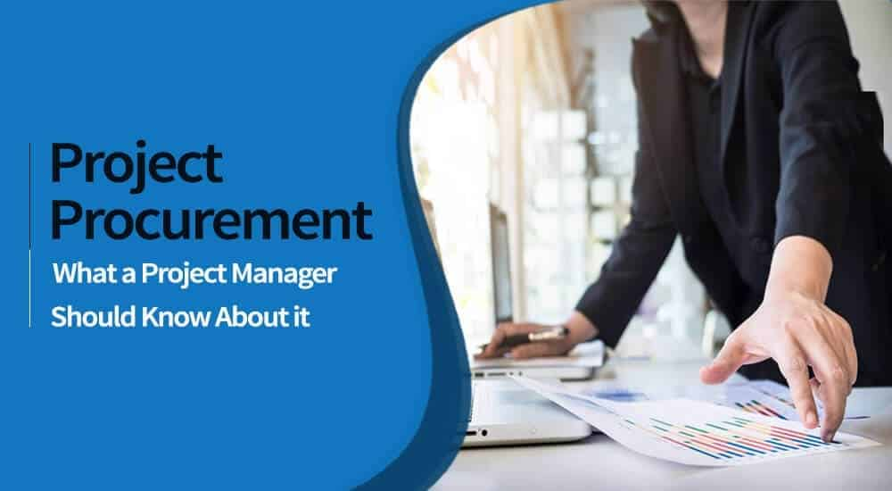
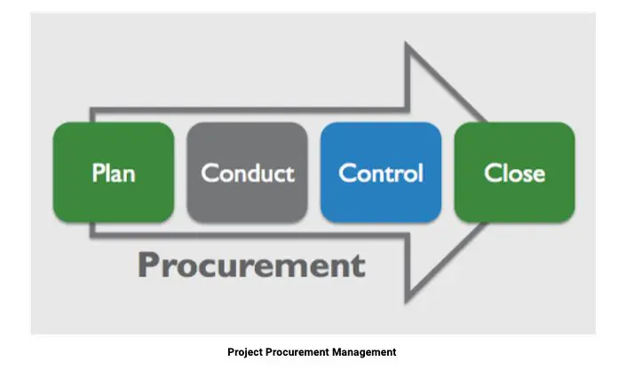
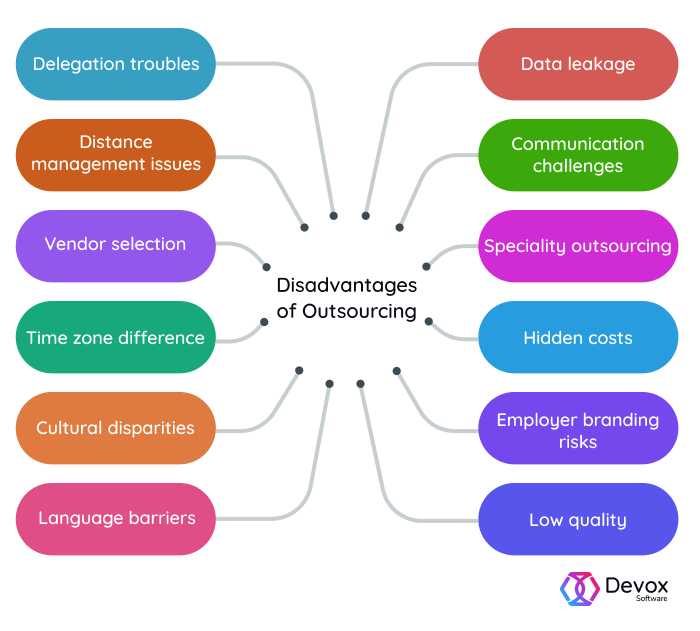

Project Procurement Management: Its Meaning, Importance, and Use of Outsourcing
By: Daniel Cisneros Siliezar
If you are a current or aspiring Agile project manager working in the sector of information technology, you are or will be familiar with the topic of project procurement management. By reading this blog post, you are also looking to enhance your knowledge and skills in being a better project manager that practices Agile methodologies. What is the meaning of procurement? What is project procurement management? What is the importance of outsourcing and why is it increasing in information technology projects? These questions will be addressed as we go through the topic.
What is the Meaning of Procurement?
Before the meaning of project procurement management is discussed, we must define what procurement is. Procurement means to obtain services and resources from external sources. This term is mainly used throughout employment within a government or servicing the public. In the private sector, purchasing and outsourcing are the main terms that mean the same thing. Anyone that is willing to provide procurement services is referred to as vendors, contractors, suppliers, or sellers (suppliers is the most common term here). These services and resources are vastly used during the development of information technology projects.
What is the Meaning of Project Procurement Management?
Now that you understand the meaning of procurement, project procurement management is the utilization of processes to obtain services and resources from external suppliers. Your organization could potentially be the seller or buyer of these goods under a contract or some other official agreement. The following subprocesses are:
- Procurement management planning - this process involves choosing what to obtain or procure, when to perform those actions, and how to perform the acquisitions. As an Agile project manager, you must make a decision on what you should outsource, the type of contract you will sign, and give a description of work for sellers that may provide their services. Sellers were defined in the previous section of the blog as suppliers. Typical outputs of this process would include a management plan and strategy of procurement, as well as statements of work, criteria of source selection, change requests, bid documents, create or purchase decisions, cost predictions, and updates to documentation about the project and the organizational assets. .
- Performing procurements - this process involves acquiring responses of the suppliers, selecting suppliers, and giving out contracts to those suppliers. Typical outputs of this process include agreements, selected suppliers, change requests, and further project updates to documentation, process assets, and management plan.
- Controlling procurements - this process involves overseeing relationships with suppliers, as well as managing the performance of contracts, making changes that are deemed necessary, and closing out other contracts. Typical outputs of this process include work performance information, closed out procurements, change requests, and updates to documentation, management plan, and process assets regarding the project.
What is the Importance of Procurement Management in IT?
As a project manager practicing the methodologies of Agile and working in the field of information technology, you will find that the projects you work on will become more and more complex. These projects will require expertise and skills that may not be available within your organization. This results in the act of outsourcing, which is the process of employing or contracting external organizations or people to provide resources and skills that are usually done within your organization. Outsourcing has numerous benefits that accomplishes different goals:
Pros:
- Reduces costs: It may cost less to obtain labor from a different part or outside of the country. You can avoid the costs of employing, relieving, and rearranging individuals to projects when outsourcing
- Allows the buying organization to focus on their core competencies: You can utilize the money saved from outsourcing and put them into goals that can be better achieved by your organization alone (i.e. customer service, product marketing, etc.)
- Provides better flexibility: You can take some stress off of your direct employees during high amounts of workload by outsourcing.
- Increases accountability: A well-defined, legally binding contract will be clear in the duties and responsibilities that will be useful in achieving project deliverables.
- Utilize technologies and skills: You may have a shortage of necessary individuals that are qualified to perform specific tasks with the skills they have. Outsourcing will help achieve the goal of getting the needed resources and skills to complete the project.
Even though these benefits are appealing to make a positive decision on outsourcing, you should also consider the challenges that come with it. Outsourcing can lead to reduced oversight over the current project, as the outsourced supplier or provider is in charge of getting that project delivered. Of course, this would lead to a chain of events that can negatively impact your project:
Cons:
- Increased dependency on the supplier: By outsourcing, you are obtaining skills or resources that may not be readily present in your organization. Either you find a way to teach your employees the skill, hire the supplier into your organization directly, or find a different solution that will not make you rely on the supplier for a while.
- Bad quality control: You should communicate with your outsourced organization or individual on what you expect for quality regarding the project. You, the project manager, are ultimately responsible for ensuring the best quality of your products to the clients obtaining goods and/or services from your organization.
- Compromising security: Outsourcing to other organizations or individuals will mean that you have to give them some access to your organizational data and property. If unchecked, they would have the ability to steal or mishandle such information.
- Poor communication: make sure you work out ways to communicate with the outsourced suppliers in a timely manner. Do they live in a different time zone and have to work outside of business hours? What is the best medium to communicate? Does the outsourced individual or organization have a good source of Internet?
- Other consequences (i.e. cost overruns, project delays, etc.)
You should know that as an Agile project manager, this is where the project procurement plan comes into play. This plan would include clear requirements, deep evaluations of possible suppliers, and deciding upon a contract that details the scope, time, and cost of the project. You should also have good channels of communication with the suppliers or outsourced personnel to make sure that the project is moving forward according to plan.
Conclusion
As an Agile project manager, you will be responsible for managing procurements throughout a project's lifecycle. You now understand the meaning of procurement, the sub processes of project procurement management, the meaning of outsourcing, and the importance of procurements in information technology. Managing procurements effectively will strongly impact your team’s performance during the project’s lifecycle. Now you understand another highly important aspect of Agile project management in information technology.
References
- Information Technology Project Management book by Kathy Schwalbe 9th Edition
- Forbes.com: The Pros and Cons of Outsourcing
- Indeed.com: Project Procurement Management Definition and Processes
- Score.org: Pros and Cons of Outsourcing